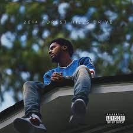
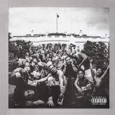
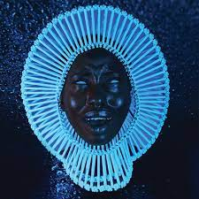

Nothing Was the Same received generally positive reviews, and was named as one of the best albums of 2013 by multiple publications.
The album was a commercial success, debuting at number one on the US Billboard 200 with 658,000 copies sold in its first week of release.
The album was nominated for Best Rap Album at the 2014 Grammy Awards. 
2014 Forest Hills Drive received generally positive reviews from critics who admired its ambitious concept, production and lyrics.
The album debuted at number one on the US Billboard 200, selling 353,000 copies in its first week.
The album won Album of the Year at the 2015 BET Hip Hop Awards, and Top Rap Album at the 2015 Billboard Music Awards.
It was nominated for Best Rap Album at the 2016 Grammy Awards. 
Primarily a hip hop album, To Pimp a Butterfly incorporates numerous other musical styles spanning the history of
African-American music, most prominently jazz, funk, and soul.
The album has received widespread acclaim from critics, who praised its musical scope and the social relevance of Lamar's lyrics.
in 2020, the album was ranked 19th on Rolling Stone's updated list of the 500 Greatest Albums of All Time. 
Consisting of tracks being sung rather than rapped, its fusion of psychedelic soul, funk and R&B influences was considered a bold departure
from the predominantly hip hop style of his prior work.
"Awaken, My Love!" received generally positive reviews from critics and debuted at number five on the US Billboard 200.

The album received widespread acclaim from critics for its smoothness, unique blend of genres, collaborations and its production.
It debuted at number two on the US Billboard 200.
The album was named among the best albums of 2017 and the decade by multiple publications and was nominated for Best Rap Album at the 2018 Grammy Awards.
Like previous releases, the album was produced by Tyler himself.
He decided to keep his rap verses short and to-the-point to give guest artists and instrumentation more of a focal point.
go back to homepage